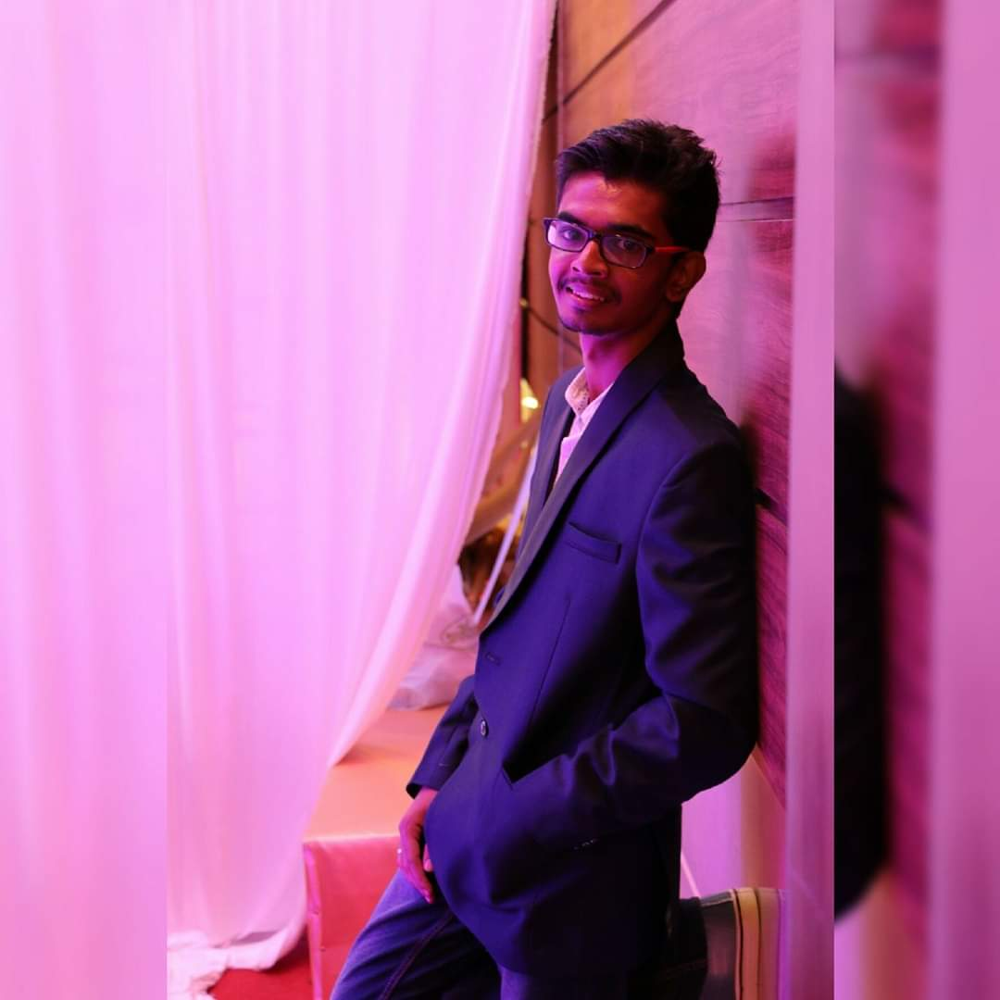

I am Ashok Kumar. B, an engineering graduate thriving to find my place in this ever-developing world of possibilities.
Being always open to challenges and constructive feedback definitely kept my life enthralled upto this point
and I don't think I would ever want anything different. Playing the phased roles of volunteer, trainer, organizer,
head through out my college life gave me the proof I needed to believe in myself that I would be a suitable team
player in the near and far future no matter the circumstance. I love to play the grounds of cricket and the courts of tennis, but hey,
you can't expect a rookie to be a star. But my other interest of watching movies is not totally for the
interesting spewed up stories and choreographs, some of it gives me the sense of belief that be a rookie or an amateur, all it takes
is a simple act of kindness and responsibility to achieve the goals we set out for in our lives and
a bit of smartness too which I possess I guess. Many people said languages are not a barrier for humanity
but i learnt it the hard way that having few knacks in multilingual proficiency definitely pays off and swore myself to
learn a few of the abundant languages and i succeeded in learning Hindi, German and of course my mother tongue Tamil and the global language English.
My level headedness is perfectly balance as all things should be because I would describe myself
as a person who doesn't lose his temper for nonsensical affairs. To sum it up my life motto is "Life is a one way ticket. Stop waiting for Friday,
for Summer, for Life, for someone who changes your path in a whim of a second.
Happiness is achieved when you stop waiting for it and make the most of the situation you are in now."